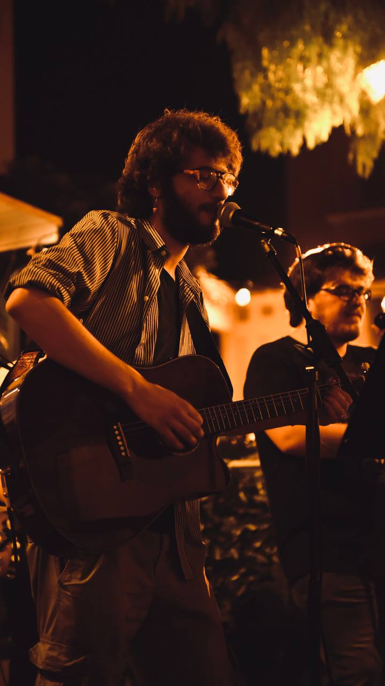

Scorri giù
Flavio Neri
Email: flavio.neri00@gmail.com

Mi chiamo Flavio Neri, sono nato il 23/08/2000 a Licata(AG) ma ho sempre vissuto ad Agrigento, mi sono diplomato
nel 2019 al liceo linguistico. Sono un laureando nella facoltà DAMS dell'Università di Palermo.
Amo molto tutte le forme di arte, ma ho una particolare passione per la musica, ho iniziato a studiare quando
avevo 11 anni flauto traverso e chitarra, ad orecchio ho imparato a suonare basso, banjo e pianoforte.
Nonostante non sia appassionato di sport mi diverte praticare
SUP e fare Trekking.
Github
Sono un ragazzo attento a questioni sociali e politiche, sin dal liceo sono sempre stato molto attivo in questo
campo; ho fatto volontariato in doposcuola o centri di aiuto ad Agrigento e a Manchester. Canto in un gruppo che
si chiama Alavò con cui, nell'ultimo anno, ho girato la parte occidentale della Sicilia per
suonare in locali o per concorsi.
Le mie competenze
- Ottima conoscenza di inglese e buona di francese
- Musicali (teoriche e pratiche)
- Competenze organizzative in eventi artistici
- Ottime ompetenze socio-relazionali
Competenze da acquisire
- Programmazione informatica
- Tecnico audio-luci
- Abilità canore
| HOBBY ED INTERESSI |
| Musica |
Letteratura |
| Arte |
Politica e Sociale |
| SUP |
Trekking |